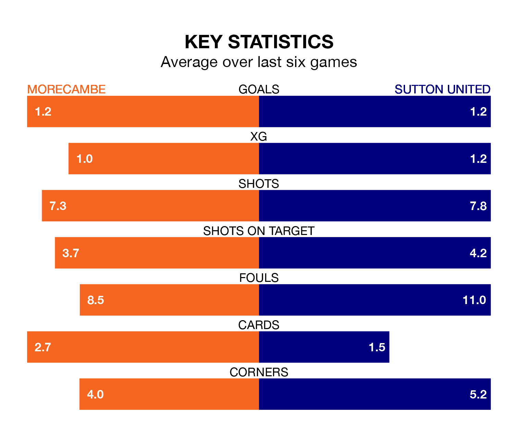

Sutton United travel to the Mazuma Stadium looking to secure a first win in eight EFL League Two games against Morecambe on Saturday.
The Us have lost two and drawn five matches since they last earned three points – against AFC Wimbledon on December 26.
They face a Morecambe side who have won two and drawn three over that time.
Sutton are 23rd in the table after 30 games, of which they have won four and drawn 10, earning 22 points.
Morecambe are 11 places ahead of United in 12th, with 11 wins and seven draws putting them on 40 points.
With 34 goals in 30 games so far this season, the Us are scoring at below the league average rate with 1.1 goals per game. And they are conceding more than average, letting in 59 goals at a rate of 2.0 per game.
The Shrimps, meanwhile, are average scorers, with 1.5 goals per game. They have conceded 1.6 goals per game.
In Michael Mellon, the hosts have one of the league's most on-form strikers so far this season. He has notched 13 goals in 22 appearances, to sit eighth in the scoring charts.
His goal rate of one every 134 minutes is quicker than that of Harry Smith, the away team's top scorer with a goal every 227 minutes, and a total of seven goals in 21 games.
Morecambe's last match was on February 3, a 2-1 win against Crawley Town, with Gerard Garner getting the goals for the Shrimps.
Sutton drew 1-1 with Doncaster Rovers last time out, also on February 3, with Craig Eastmond on the scoresheet.
Updated: 11:18 (UTC), 08/02/24